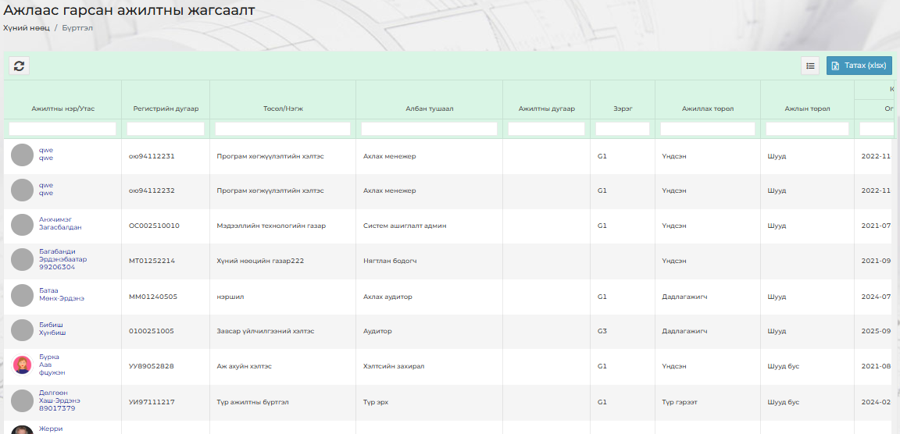

Ажлаас гарсан болон урт хугацааны чөлөө авсан ажилтнуудын мэдээлэл уг Ажлаас гарсан ажилтны жагсаалт руу шилжих бөгөөд тухайн ажилтнуудын мэдээллийг харах хэрэгцээ шаардлага гарвал Хянах самбар ⭢ Идэвхгүй ажилтны жагсаалт гэсэн дарааллаар орно.
